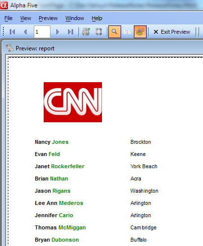

Reports - HTML Calculated Fields
You can now define calculated fields in a report that render as HTML. Your calculated field expression returns an HTML string which Alpha Anywhere renders. This is a very powerful new feature. It will allow users to exercise an enormous amount of creativity in formatting a report.To use this feature, define a calculated field using the new printHTML() function. This function takes a single argument - the HTML text that you want to render in the report.
For example the report below, which at first glance seems trivially simple, is actually demonstrating some interesting new features.
Firstly, the CNN logo at the top is being pulled directly from the CNN web site. This is achieved by defining the following calculated field and then placing that field in the Report Header section:
imgtag = printHTML("<img src=\"http://i.cdn.turner.com/cnn/.element/img/3.0/global/header/hdr-main.gif\">")
Next, the fullname field shows a calculated field that concatenates 'firstname' and 'lastname'. But the 'firstname' is set to bold, while the lastname is set to be green. This would not be possible in a standard calculated field. Here is how this calculated field is defined:
fullname = printHTML("<b>"+Firstname+"</b> <span style='color:green; font-weight: bold;'>"+Lastname+"</span>")
